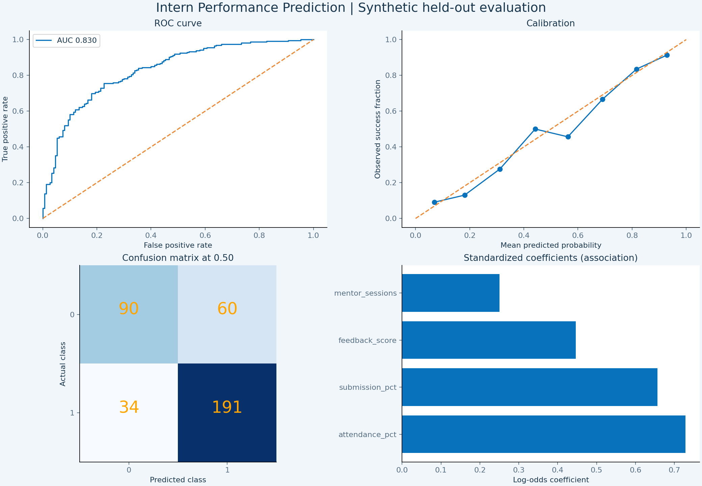

Predicted success by department
Mean probability · held-out interns only
Mean probability · held-out interns only
Priority <40% · Check-in 40–69% · On track ≥70%
Select an intern to load their early engagement into the prediction studio. Ordered by lowest estimated success probability.
| Intern | Department | Attendance | Submitted | Feedback | Success estimate | Review |
|---|
Custom scenario
Only information available by the end of week 2 is used. Mentor sessions are the total across those two weeks.
Hypothetical +10 percentage points in attendance and submissions (capped at 100%). This is a model response, not a promised intervention effect.
Fixed 25% stratified holdout · metrics never change with cohort filters · decision threshold 0.50

Precision and recall refer to success (class 1), not to detecting struggling interns.
1,500 simulated records; 1,125 training and 375 test interns. Attendance, task submission percentage, mentor feedback (1–5) and mentor contacts are week 2 snapshots. Final success is a simulated later outcome: meeting the end-of-program rubric. No official Internee.pk intern data is used.
A StandardScaler and LogisticRegression pipeline is fitted on training data only. Five-fold cross-validation is limited to the training set. A prior-only baseline is included. The browser uses the exported learned coefficients and scaler, not hand-written probability rules.
The simulator predicts statistical association, not causation. Unusual combinations may be outside the training distribution. Feedback is subjective; review potential mentor bias before real use. Department is a display filter, not a model input.
Discuss barriers privately, agree on achievable goals, offer resources and review engagement next week. Guidance rules are transparent support suggestions, separate from the ML estimator. Never use this demo for automatic rejection, dismissal, ranking for hiring or punishment.
Synthetic outcomes were generated from engagement-related probabilities with noise. Good performance here does not establish real-world accuracy or calibration. Before real use, obtain authorized data, define the outcome rubric, test on later cohorts and evaluate subgroup errors and calibration. There are no individual confidence intervals.